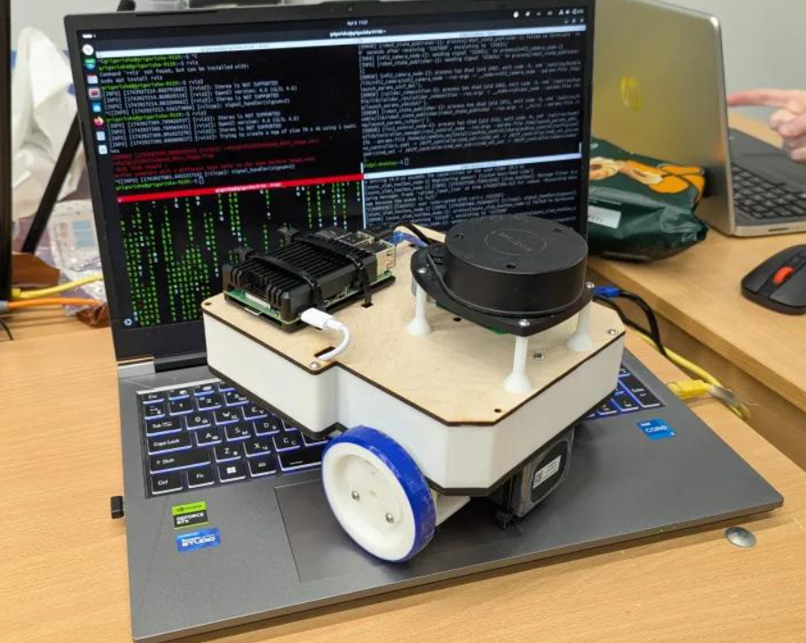
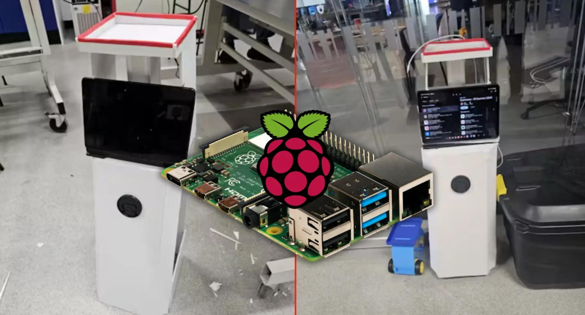
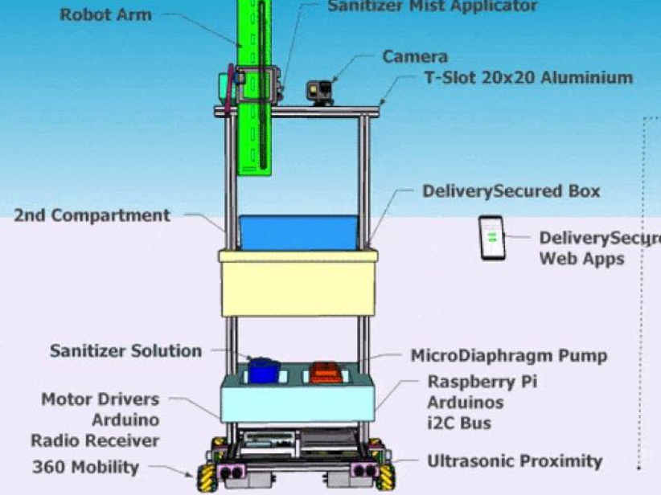
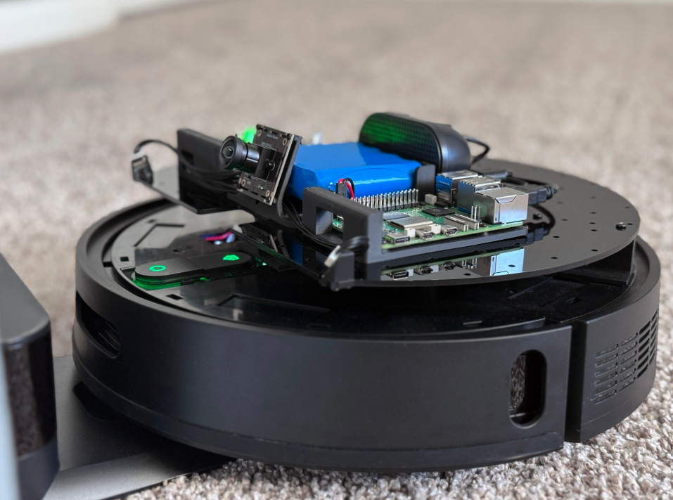

Autonomous Movement
Move between configured indoor delivery locations using programmed navigation.
VJAYA ROBOTICS PROJECT
RASPBERRY PI ROBOTICS PROJECTBuild an intelligent indoor delivery robot using Raspberry Pi, Python, distance sensors and motor drivers. The robot can transport small packages or medicines between selected indoor locations while detecting obstacles.
Explore ProjectPROJECT OVERVIEW
The Indoor Delivery Robot is a mobile robotic system designed to transport medicines, small packages and other lightweight items inside buildings.
A Raspberry Pi acts as the main controller and runs Python programs for robot operation, navigation, sensor monitoring and communication.
Distance sensors detect nearby obstacles, while motor drivers control the movement of the robot. Wheel encoders can help estimate the distance travelled.
A web-based dashboard allows users to select delivery destinations and monitor the robot's operating status.




WHAT IT CAN DO
Move between configured indoor delivery locations using programmed navigation.
Detect nearby obstacles using distance sensors and respond by stopping or avoiding them.
Carry medicines and lightweight packages inside a dedicated storage compartment.
Select delivery destinations and monitor robot status through a web interface.
Control the left and right motor groups using a dual-channel motor driver.
Monitor battery status, movement state and delivery progress.
HARDWARE REQUIREMENTS
SOFTWARE REQUIREMENTS
The Python program is organized into separate modules for configuration, motor control, sensor monitoring, navigation, delivery management and web communication.
HOW IT WORKS
HARDWARE CONNECTIONS
| Component | Component Pin | Raspberry Pi Connection |
|---|---|---|
| TB6612FNG | AIN1 | GPIO17 |
| TB6612FNG | AIN2 | GPIO27 |
| TB6612FNG | PWMA | GPIO18 |
| TB6612FNG | BIN1 | GPIO22 |
| TB6612FNG | BIN2 | GPIO23 |
| TB6612FNG | PWMB | GPIO13 |
| TB6612FNG | STBY | GPIO24 |
| VL53L0X | SDA | GPIO2 (I2C SDA) |
| VL53L0X | SCL | GPIO3 (I2C SCL) |
| VL53L0X | VIN / GND | Suitable supply / Common GND |
| Wheel Encoders | Encoder Outputs | GPIO inputs (configured in software) |
ROBOT NAVIGATION
| System | Function |
|---|---|
| Distance Sensors | Detect nearby obstacles. |
| Wheel Encoders | Estimate wheel movement and distance. |
| Motor Driver | Control robot movement. |
| Navigation Module | Manage configured routes and destinations. |
| Delivery Module | Manage delivery tasks and status. |
| Web Dashboard | Receive user commands and show robot status. |
PROGRAM STRUCTURE
Main program and robot initialization.
GPIO assignments and robot configuration.
Motor initialization, speed and movement control.
Distance sensor and obstacle monitoring.
Route management and robot navigation.
Delivery task and destination management.
Flask dashboard and user communication.
Wheel encoder readings and movement estimation.
PROGRAMMING
The project firmware is organized into separate Python modules. Add the completed files to the source folder to enable these downloads.
main.py
Download Code ↓ 📄config.py
Download Code ↓ 📄motor_control.py
Download Code ↓ 📄sensors.py
Download Code ↓ 📄navigation.py
Download Code ↓ 📄delivery.py
Download Code ↓ 📄encoder.py
Download Code ↓ 📄web_server.py
Download Code ↓PROJECT DEMONSTRATION
Indoor Delivery Robot Demonstration
Add your actual robot photograph or demonstration video here.IMPORTANT INFORMATION